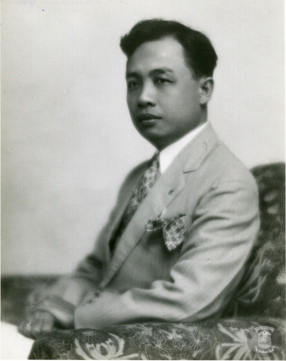

CHAPTER I
Introduction to the Course
The Rizal Bill was as controversial as Jose Rizal himself. The Rizal Bill involves mandating the educational institutions in the country to offer a course on the Life, Works, and writings of Jose Rizal especially his two novels; Noli Me Tangere and El Filibusterismo.
The bill was passed into a law on June 12, 1956, it was signed by President Ramon Magsaysay, Sr.The transition of be from being a bill to becoming a republic act was, however. not easy as the proposal was met with intense opposition, particularly from the Catholic Church.

Claro M. Recto:
Dubbed as communist and anti-Catholic by critics for proposing the Rizal Bill.
The main proponent of this bill is Former Senator Claro M. Recto. However, due to the bill was heavily opposed by the Catholic church, Recto was named as a communist and an Anti-Catholic. Catholic schools threatened to stop operation if the bill was passed, though Recto calmly countered the threat, stating that if that happened, the schools would be nationalized. Afterward threatened to be punished in future elections, Recto remained undeterred. Concerning the suggestion to use instead the expurgated (edited) version of Rizal's novels as mandatory readings, Recto explained his firm support for the unexpurgated version, exclaiming: "The people who would eliminate the books of Rizal from the schools would blot out from our minds the memory of the national hero. This is not a fight against Recto but a fight against Rizal". The bill was eventually passed, but with a clause that would allow exemptions to students who think that reading the Noli and Fili would ruin their faith. In other words, one can apply to the Department of Education for exemption from reading Rizal's novels--though not from taking the Rizal subject. The bill was enacted on June 12, 1956.
• Purpose: Mandates educational institutions to include courses on Jose Rizal's life, works, and writings, especially his novels Noli Me Tangere and El Filibusterismo.
• Importance: Aimed at instilling ideals of freedom and nationalism in Filipino youth, paying tribute to Rizal's contributions, and fostering patriotism.
• Implementation: Former President Fidel V. Ramos directed full implementation through Memorandum Order No. 247 in 1994.
• Prohibits cockfighting, horse racing, and jai alai on Rizal Day (December 30).
• Establishes a committee to oversee the proper celebration of Rizal Day in municipalities and chartered cities.
• RA 1425, or the Rizal Law, mandates educational institutions to teach courses on Rizal's life and works, emphasizing his novels Noli Me Tangere and El Filibusterismo.
• The law aims to foster ideals of freedom and nationalism among Filipino youth and pay tribute to Rizal's contributions.
• Former President Ramos directed the full implementation of RA 1425 through Memorandum Order No. 247 in 1994.
• Republic Act No. 229 prohibits certain activities on Rizal Day and establishes a committee for its proper celebration.
1. Insights into Current Problems:
• Understanding history helps in providing solutions to present problems.
• Rizal's life provides historical insights for making life decisions.
2. Understanding Filipino Identity:
• Studying Rizal helps in understanding Filipino heritage and identity.
• It contributes to understanding the country's collective experience.
3. Teaching Nationalism and Patriotism:
• Rizal's works radiate nationalism and patriotism.
• The subject enhances understanding of the country.
4. Providing Life Lessons:
• Rizal's life offers lessons in facing challenges with nobility and selflessness.
• His decisions prioritize values beyond personal feelings and happiness.
5. Developing Critical Thinking:
• Rizal demonstrated critical thinking in his writings and actions.
• Studying Rizal fosters critical thinking skills.
6. Rizal as a Model and Inspiration:
• Rizal's principles and ideals serve as inspiration to Filipinos.
• He valued nationalism, education, and moral uprightness.
7. Rich Source of Entertaining Narratives:
• Rizal's life provides fascinating non-fictional accounts that entertain and educate.
Segunda Katigbak:
Rizal’s ‘first love’ of whom the sportscaster Chino Trinidad is a descendant.
For instance, it is rarely known that: (a) Rizal was involved in a love triangle with Antonio Luna as also part of the romantic equation. (b) Rizal was a model in some of Juan Luna's paintings. (c) Rizal's common-law wife, Josephine Bracken, was "remarried" to a man from Cebu and had tutored former President Sergio Osmeña. (d) Leonor Rivera ("Maria Clara"), Rizal's "true love," had a son who married the sister of the former President of the United Nations General Assembly, Carlos P. Romulo. (e) The Filipina beauty queen Gemma Cruz Araneta is a descendant of Rizal's sister, Maria. (f) The sportscaster Chino Trinidad is a descendant of Rizal's "first love" (Segunda Katigbak). (g) The original manuscripts of Rizal's novels (Noli and Fili) were once stolen for ransom, but Alejandro Roces had retrieved them without paying even a single centavo.